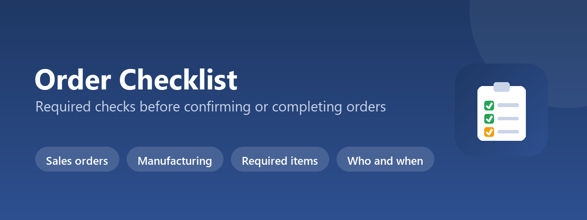

Gives every sales order and manufacturing order its own checklist, and holds the order until the required items are ticked.
List the things your team must check on sales orders and on manufacturing orders. Every order gets a Checklist tab with those items, to tick as the work is done. A sales order cannot be confirmed, and a manufacturing order cannot be marked as done, until every required item is ticked.
📋 Your own checklistsOne list of items for sales orders and one for manufacturing orders, for one company or shared by all of them. |
🔒 Required or reminderA required item holds the order until it is ticked. A reminder is shown on the order but never blocks it. |
✅ Checklist on every orderEach order has a Checklist tab with a progress bar and the number of required items still to tick. |
👤 Who ticked and whenEach line keeps the user and the time of the tick, and every tick or untick is logged on the order. |
🛑 Checked when it countsSales orders are checked at confirmation and manufacturing orders at Mark as Done. The message lists what is missing. |
🔄 Open orders stay currentAn item added later is put on the orders that are still open. Archiving an item removes its lines that are not ticked yet. |
Odoo 18.0 • Community & Enterprise • depends on Sales and Manufacturing • Licence LGPL-3
Odoo implementation and development. thecodelegion.com